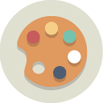

Mes comptétences
|  |  |
||||
| Création Web | Comunity Management | Créativité | Photoshop | Indesign | Illustrator |
| Je crée et modifie des sites webs en HTML/CSS à l'aide d'Adobe Dreamweaver, je sais aussi me servir de Wordpress et Joomla,ainsi que des bases dynamiques notamment avec Bootstrap. | Sur les réseaux sociaux depuis plus de 10 ans, je me sers de mon experience pour attirer et fidéliser les clients ou les communautés, principalement sur Facebook, Twitter, Instagram, Pinterest, Snapchat et YouTube. | Je fais de la peinture et du dessin depuis de nombreuses années, je maitrise donc les techniques du crayonné, de l'acrylique, de l'aquarelle ainsi que de l'encre. Plus récemment je fais aussi des dessins numériques grâce à une tablette graphique bamboo. | Retouche de photo, création de dessins originaux. Version CC et CS6. | Création et mise en page de documents, création de livres. Version CC et CS6. | Création de visuel, de logo. Version CC et CS6. |
Langues
 |
 |
||
| Portugais | Agnlais | Espagnol | Français |
| Basic Niveau A2 |
Basic Niveau A2 |
Courant Niveau C1 + CLES 2 |
Maternel |